Life Beyond Tech
I'm a self-taught artist. I paint, and I like teaching myself new mediums, spending a few months figuring out how a material behaves before I'm any good with it. I also sing, usually to unwind after a hard week.
I do believe talents like these are friends worth nurturing, that you spend time with them when things are going well so you can find your way back to them when they aren't.
Nurturing these very human skills can feel counterintuitive in the world we're building, but I think it's essential. It's what keeps my taste sharp, what lets me look at an old problem with fresh eyes, and on the days I need it, a soft place to land.
Marker Sketches
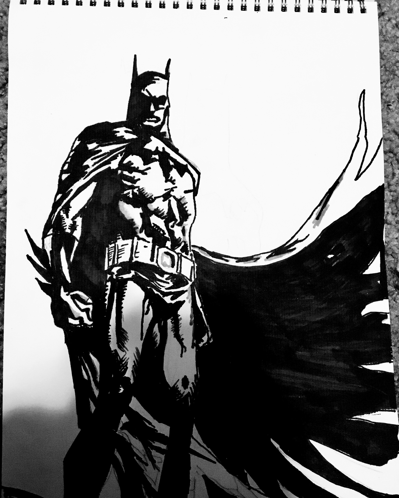
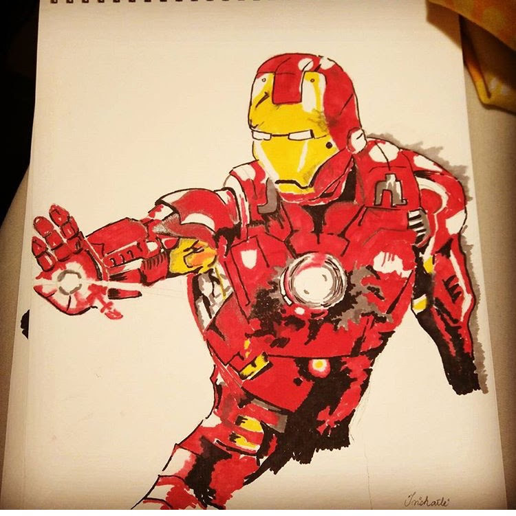
Watercolor & Ink
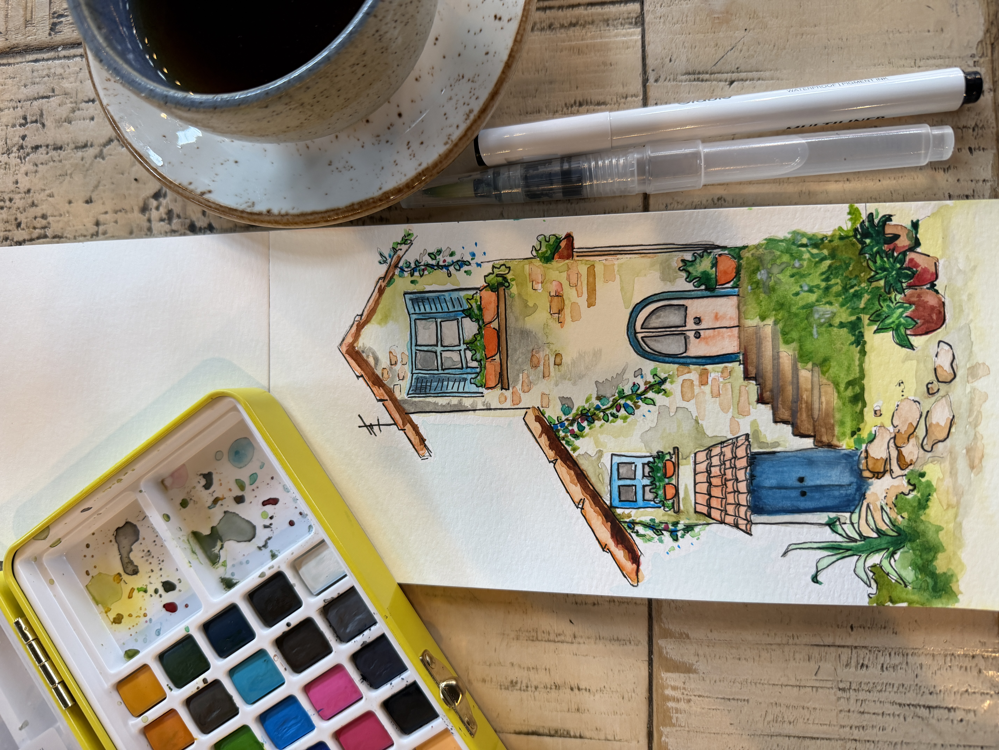
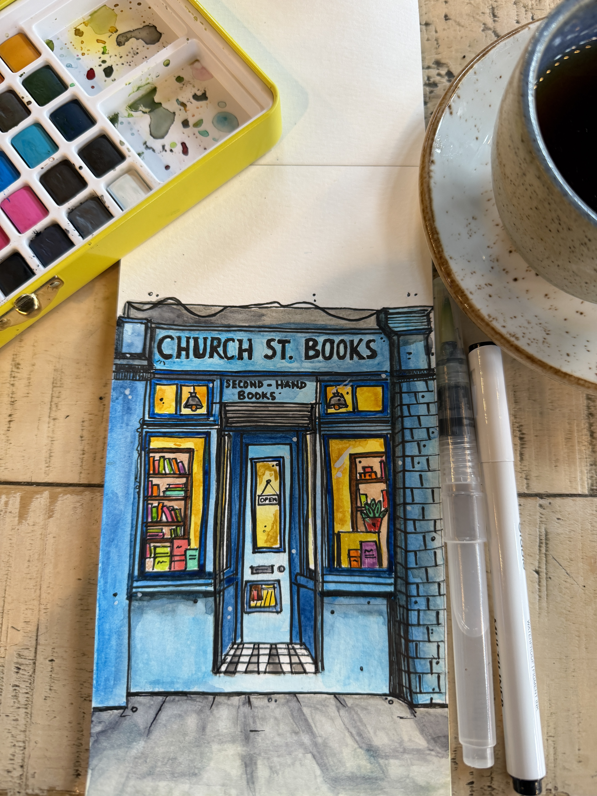
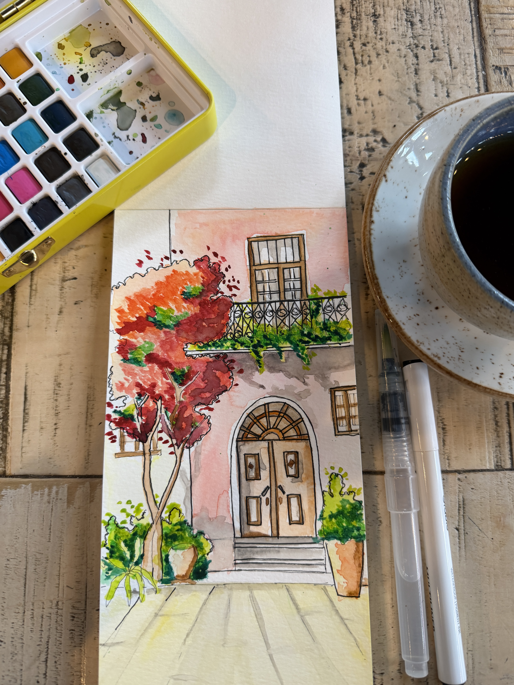
Acrylic
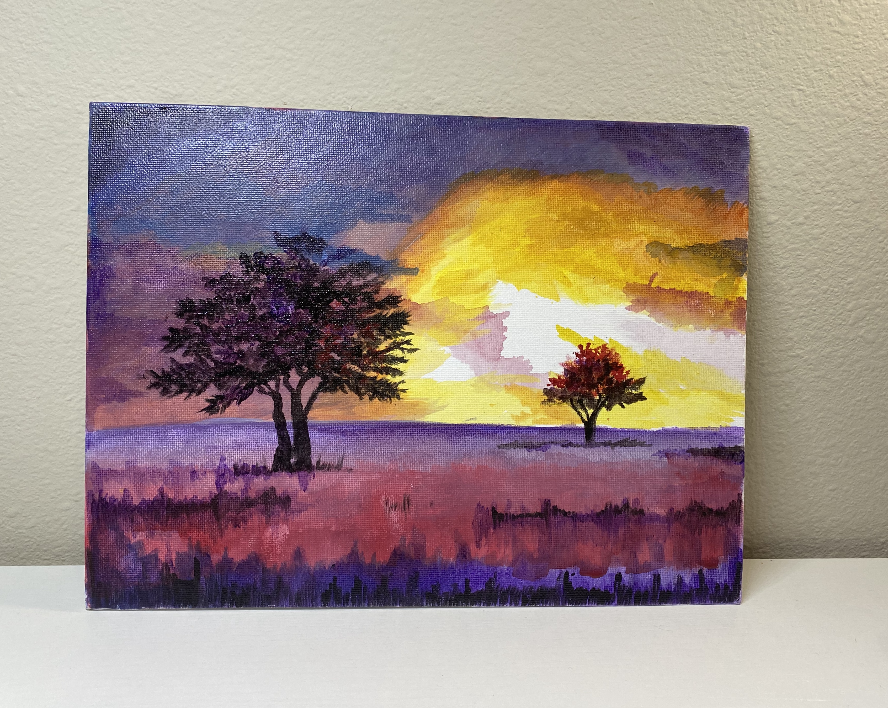
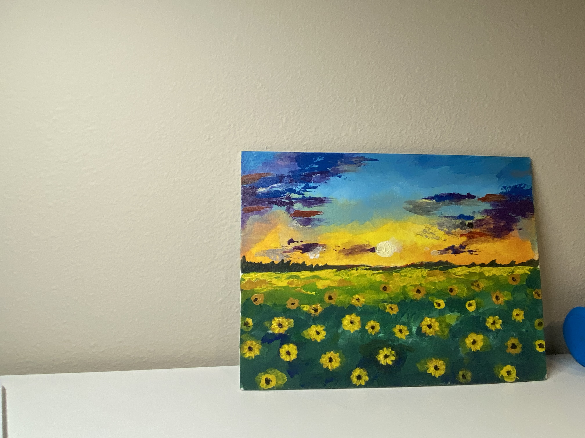
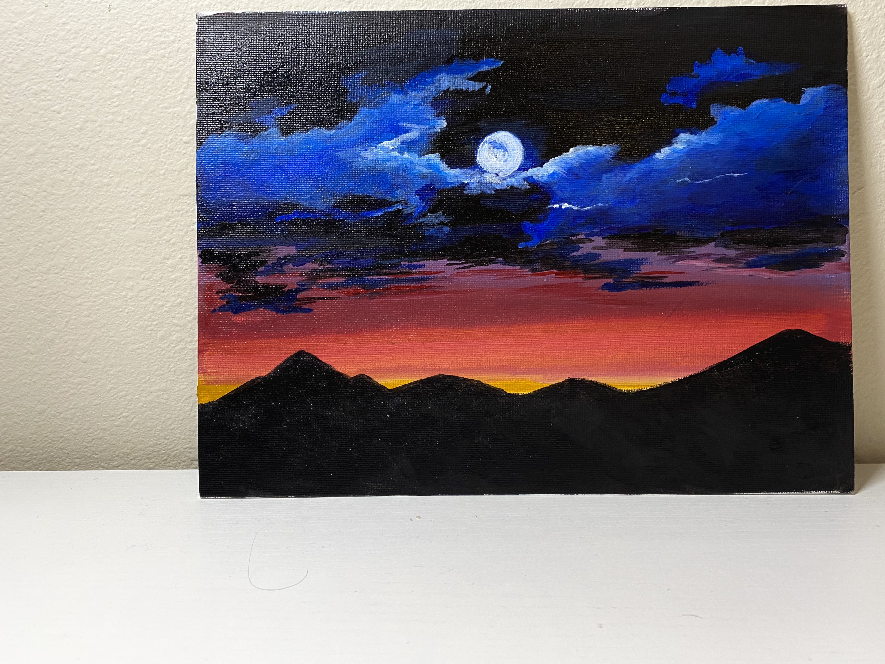
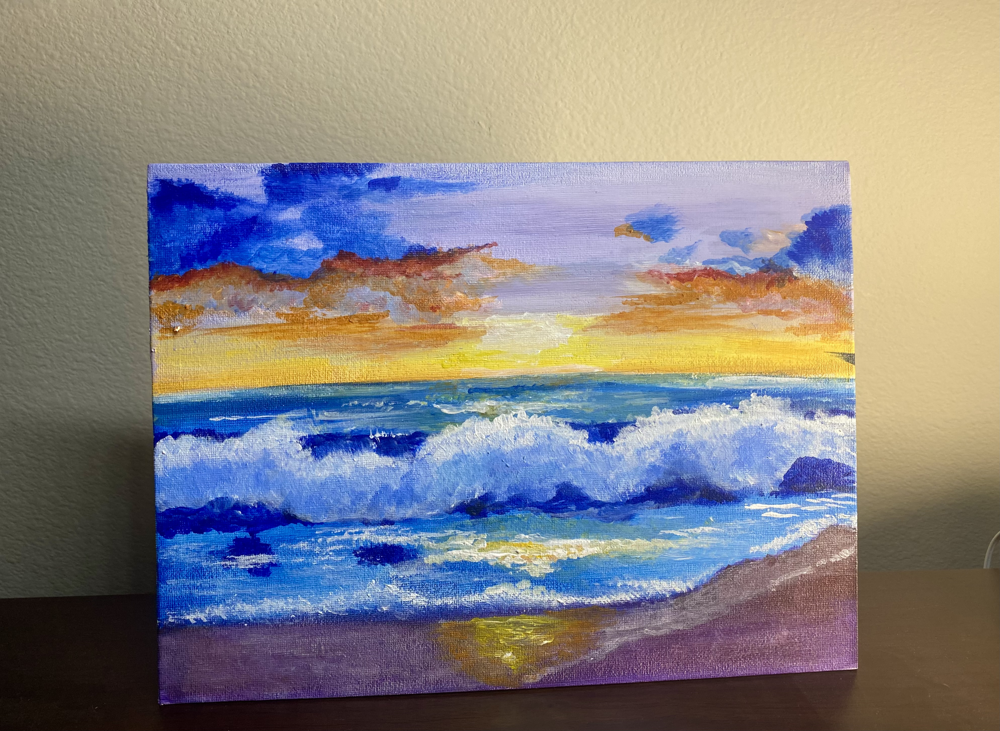
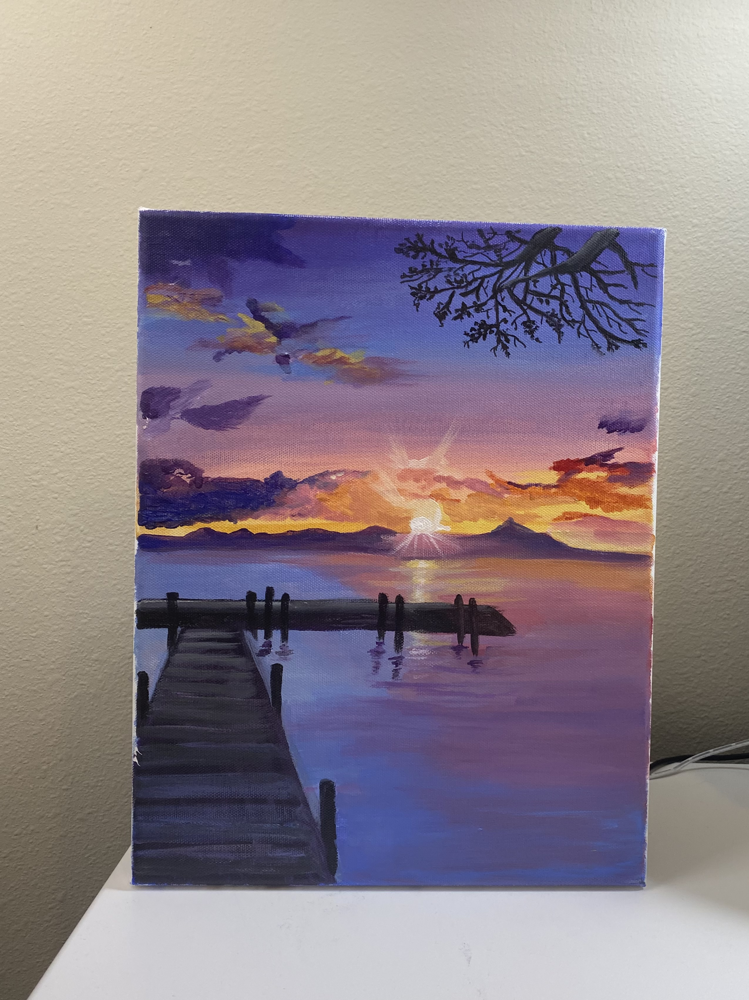
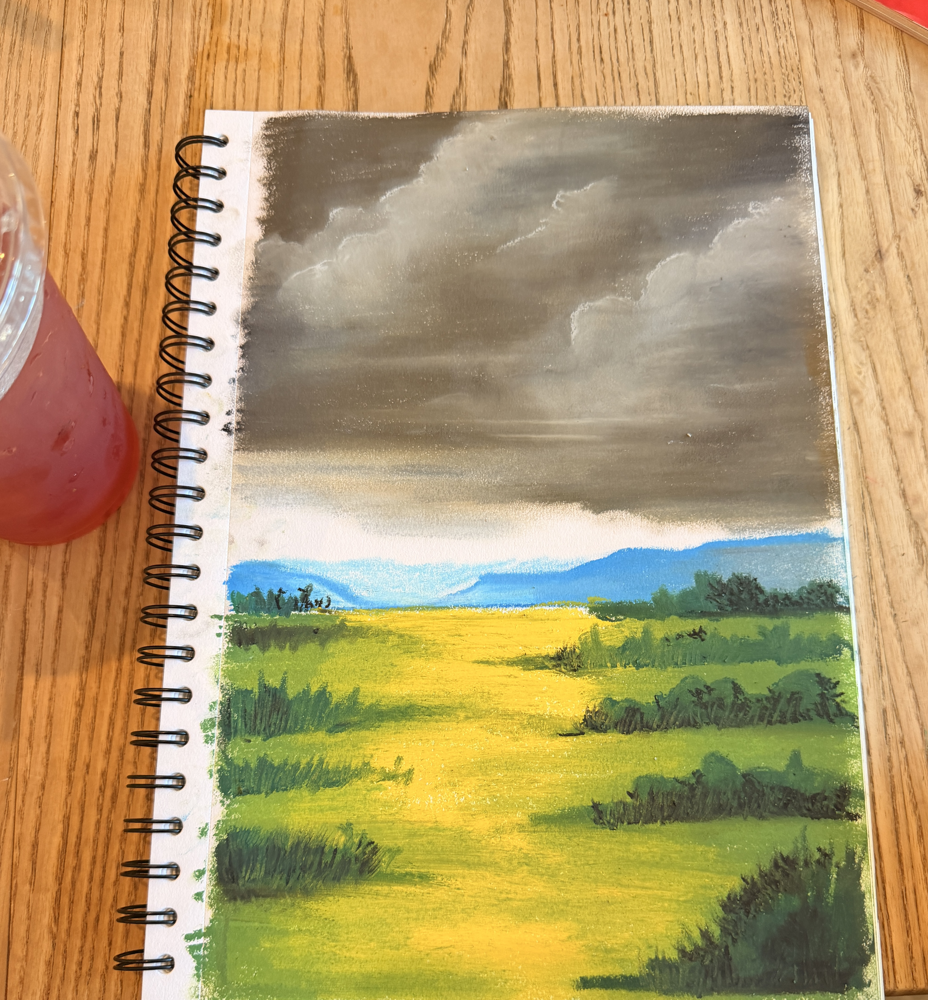
Animation
Learning to animate - here are my first few attempts.

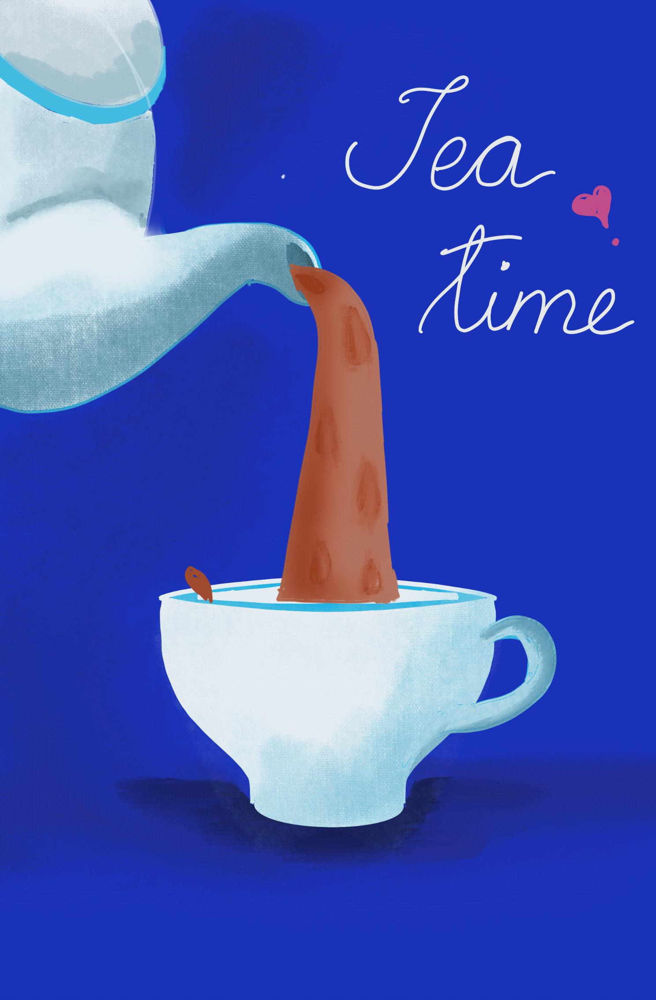

Writing
Unexpected Friendships
A colleague once told me he didn't want his son to think of Harvard as his life's destination, just the beginning of a journey that would need hobbies to lean on through the hard parts. It made me think about the hobbies I gave up too early, and the ones I'm finally giving myself permission to return to.
Read on Medium →My Favorite Books of 2021
Books have been my best friends even before I learned how to read. I read 17 books last year, and these five, on trauma, resilience, grief, war reporting, and therapy, left the deepest mark.
Read on Medium →The Relativity of Privilege
Microsoft's Giving Month got me reflecting on how relative privilege can feel, on the volunteering I did teaching English at shelter homes in Mumbai, and on holding gratitude and sadness at the same time for the opportunities we're each dealt.
Read on Medium →